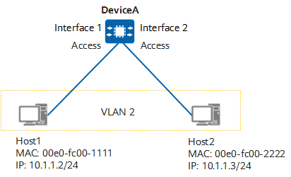
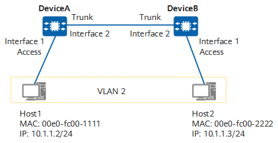

Intra-VLAN Communication Through a Single Device
In Figure 1, Host1 and Host2 are connected to DeviceA, belong to VLAN 2, and are located on the same network segment. DeviceA connects to the two hosts using access interfaces.
Figure 1 Intra-VLAN communication through a single device
When Host1 sends a packet to Host2, the packet is transmitted as follows (assuming that no forwarding entry is created on DeviceA):
- Host1 determines that the destination IP address is on the same network segment as its IP address, and broadcasts an ARP Request packet to obtain the MAC address of Host2. The ARP Request packet carries the all-F destination MAC address and the destination IP address 10.1.1.3 (Host2's IP address).
- When the packet reaches interface 1 on DeviceA, DeviceA determines that the ARP Request packet is untagged and adds a tag with VLAN ID 2 (which is the PVID of interface 1) to the packet. DeviceA then adds the mapping between the source MAC address, VLAN ID, and interface (00e0-fc00-1111, 2, interface 1) to its MAC address table.
- As DeviceA does not find a MAC address entry matching the destination MAC address and VLAN ID of the ARP Request packet, it broadcasts the ARP Request packet to all interfaces that allow VLAN 2 (interface 2 in this example).
- Before sending the ARP Request packet, interface 2 on DeviceA removes the VLAN tag 2 from the packet.
- Host2 receives the ARP Request packet from interface 2 and records the mapping between the MAC address and the IP address of Host1 in its ARP table. Host2 then compares the destination IP address with its own IP address. If they are the same, Host2 sends an ARP Reply packet carrying Host2's MAC address (00e0-fc00-2222) and Host1's IP address (10.1.1.2) as the destination IP address.
- After receiving the ARP Reply packet, interface 2 on DeviceA tags the packet with VLAN ID 2.
- DeviceA adds the mapping between the source MAC address, VLAN ID, and interface (00e0-fc00-2222, 2, interface 2) to its MAC address table, and then searches for an entry in its MAC address table based on the destination MAC address and VLAN ID (00e0-fc00-1111, 2).
- Before sending the ARP Reply packet from interface 1, DeviceA removes the tag with VLAN ID 2 from the packet.
- Host1 receives the ARP Reply packet from interface 1 and records the mapping between the MAC address and the IP address of Host2 in its ARP table.
Intra-VLAN Communication Through Multiple Devices
In Figure 2, Host1 and Host2 belong to VLAN 2, are located on the same network segment, and are connected to DeviceA and DeviceB, respectively. DeviceA and DeviceB are connected using a trunk link over which frames tagged with VLAN ID 2 can be identified and transmitted between them.
Users in the same VLAN but on different network segments cannot communicate with each other at Layer 2 through DeviceA and DeviceB. They can communicate with each other at Layer 3 using VLANIF interfaces. This implementation is similar to that described in Inter-VLAN Communication Through Multiple Devices Using VLANIF Interfaces.
Figure 2 Intra-VLAN communication through multiple devices
When Host1 sends a packet to Host2, the packet is transmitted as follows (assuming that no forwarding entry is created on DeviceA and DeviceB):
- Host1 determines that the destination IP address is on the same network segment as its IP address, and broadcasts an ARP Request packet to obtain the MAC address of Host2. The ARP Request packet carries the all-F destination MAC address and destination IP address 10.1.1.3 (Host2's IP address).
- When the packet reaches interface 1 on DeviceA, DeviceA determines that the ARP Request packet is untagged and adds a tag with VLAN ID 2 (which is the PVID of interface 1) to the packet. DeviceA then adds the mapping between the source MAC address, VLAN ID, and interface (00e0-fc00-1111, 2, interface 1) to its MAC address table.
- As DeviceA does not find a MAC address entry matching the destination MAC address and VLAN ID of the ARP Request packet, it broadcasts the ARP Request packet to all interfaces that allow VLAN 2 (interface 2 in this example).
- Interface 2 on DeviceA transparently transmits the ARP Request packet to interface 2 on DeviceB without removing the packet's VLAN tag, as the VLAN ID of the packet is different from the PVID (which is 1 in this example) of interface 2 on DeviceA.
- After receiving the ARP Request packet, interface 2 on DeviceB determines that VLAN 2 is allowed and accepts the packet.
- As DeviceB does not find a MAC address entry matching the destination MAC address and VLAN ID of the ARP Request packet, it broadcasts the ARP Request packet to all interfaces that allow VLAN 2 (interface 1 in this example).
- Before sending the ARP Request packet, interface 1 on DeviceB removes the tag with VLAN ID 2 from the packet.
- Host2 receives the ARP Request packet from interface 1 on DeviceB and records the mapping between the MAC address and IP address of Host1 in its ARP table. Host2 then compares the destination IP address with its own IP address. If they are the same, Host2 sends an ARP Reply packet carrying Host2's MAC address (00e0-fc00-2222) and Host1's IP address (10.1.1.2) as the destination IP address.
- After receiving the ARP Reply packet, interface 1 on DeviceB tags the packet with VLAN ID 2.
- DeviceB transparently transmits the ARP Reply packet of Host2 through interface 2 to interface 2 on DeviceA. This is because interface 2 on DeviceB is a trunk interface and its PVID (which is 1) is different from the VLAN ID of the packet. As a result, interface 2 on DeviceB does not remove the VLAN tag of the packet.
- After receiving the ARP Reply packet, interface 2 on DeviceA determines that VLAN 2 is an allowed VLAN and accepts the packet.
- DeviceA adds the mapping between the source MAC address, VLAN ID, and interface (00e0-fc00-2222, 2, interface 2) to its MAC address table, and then searches for an entry in its MAC address table based on the destination MAC address and VLAN ID (00e0-fc00-1111, 2).
- Before sending the ARP Reply packet from interface 1, DeviceA removes the tag with VLAN ID 2 from the packet.
- Host1 receives the ARP Reply packet from interface 1 and records the mapping between the MAC address and the IP address of Host2 in its ARP table.
In addition to transmitting frames from multiple VLANs, a trunk link can transparently transmit frames without adding or removing VLAN tags of packets.